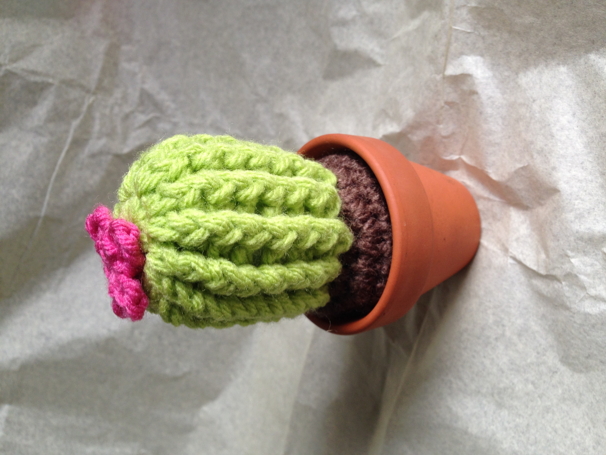

Hi, and welcome! My name is Diem, and one of my favorite past time is crocheting. I find it relaxing and rewarding when I am working on a project. I call myself an amateur, thus I'm not here to teach you how to crochet. The purpose to convince you to give it a try and provide you with some helpful resources through your journey.
The best way to learn is to just start. I learned by watching YouTube videos. Simply search what you want to crochet; however, I recommend starting with the common stitches listed in the table below. Once you get a hang of them, search for the crochet projects you want to do. I started with hats, and I am currently into Amigurumi projects. Check out my gallery for some inspo!
To get started, you will only need a few items.
Here's a table of basic stitches and their commonly used initials:
| Stitch | Initial |
|---|---|
| Chain Stitch | ch |
| Slip Stitch | sl |
| Single Crochet | sc |
| Half Double Crochet | hdc |
| Double Crochet | dc |
| Treble Crochet | tc |